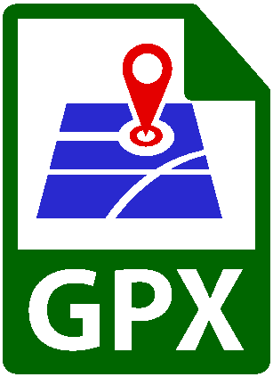

Mario del Grande e Remo Camerini
|
||
|
|
|
|
| Paths to reach the Hut Mario del Grande e Remo Camerini |
||
| "Alpi Vazzeda" Trail 301-305 |  | The classic trail to reach the hut. Follows the path for the 3rd stop of Valmalenco's "Alta Via" |
| "Alta Via" Trail (throug Val Sissone) AV301-305 | This trail passes in front of the Disgrazia glacier. Very beautiful scenery, especially from the hut down to the valley | |
| "Alpe Sissone" Trail 325 | The shortest trail to reach the hut. Includes some very steep sections. | |
| Circular trail to Forni Hut | Recently opened, goes to Forno Hut (in Switzerland) through the Forno Pass and returns through the Vazzeda Pass. For properly equipped, expert hikers only. | |
| Trail towards "Alpe dell'Oro" | If you are already following the "Alta Via" route and you are heading for Rif. Longoni from our hut, this is the best path without go down to Chiareggio. | |
| "Italia" trail, stop 291B | Gerli-Porro Huts(1960m), Forbicina (1620m) Del Grande Camerini Hut (2580m), Chiareggio (1610m) |

|

|
| How to reach the starting point in Chiareggioo
When you reach the city of Sondrio, turn north following the indicarion for Chiesa in Valmalemco Once you have passed the city of Chiesa, you continue to village di San Giuseppe, after which you will continue along a narrow road to reach Chiareggio. Beyond the village you can find a good and ample parking on the side of the Mallero stream . |